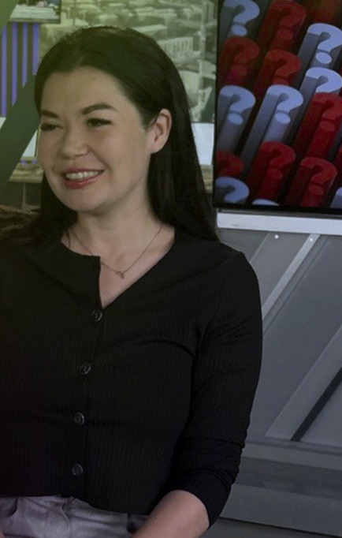
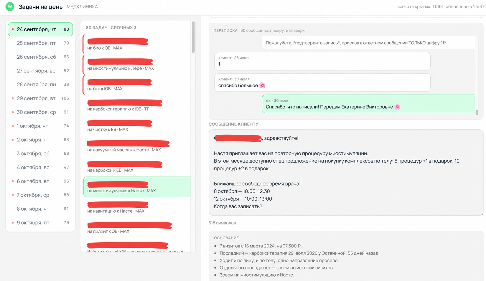
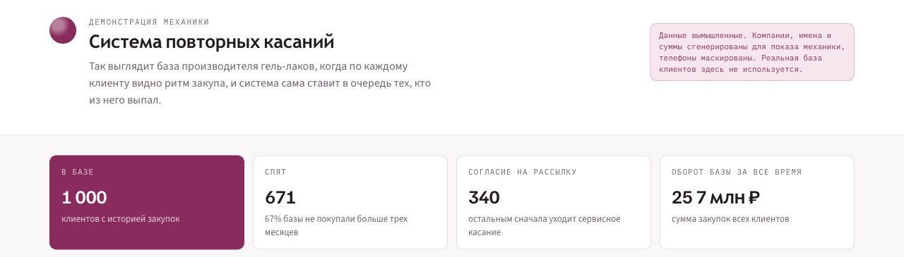
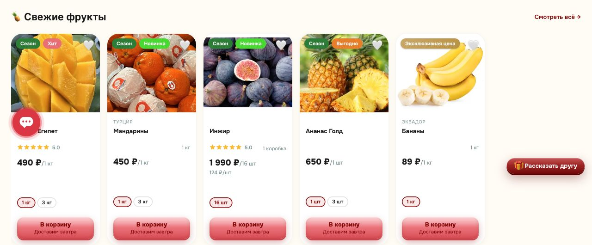

Философия красоты и здоровья
Контент и продвижение медицинского центра
22,8 млн ₽выручки в год без рекламного бюджета
Открыть кейс Портфолио / маркетинг и digital
От стратегии и контента до инструментов, которые упрощают работу команды и помогают бизнесу расти.

Анастасия Маркова
Digital-маркетолог
11+ лет в digital
01 / Комплексная работа
Стратегия, продвижение, контент и управление маркетингом для проектов из разных сфер.
Контент и продвижение медицинского центра
Запуск и продвижение продукта с чеком от 150 000 ₽
Контент и привлечение аудитории для застройщика
Маркетинг сети под одним управлением
Привлечение водителей для транспортной компании
02 / Инструменты
Решения для работы с клиентами, аналитики и управления. Рядом с работающими инструментами показываю демонстрации.
История клиента, свободное время врача и черновик сообщения на одном экране.
12 → 3 часаНа одинаковый объем в 70 задач. Расчет по общему времени, без хронометража каждой задачи.

Помощник собирает материалы для управления бизнесом в одном месте. Демонстрация на тестовых данных.
Открыть демонстрацию ↗Сверка клиентов YClients с задачами в WAHELP помогает увидеть, кто не попал в дальнейшую работу.
2 614 клиентовОдин прогон занял около 2 минут.
Бот помогает посмотреть расходы и стоимость обращения по кнопке.
Помогает находить клиентов для повторных продаж и готовить следующие действия менеджера.

Открыть демонстрацию ↗Учет расходов через Telegram с записью данных в таблицу.

Интернет-магазин с каталогом товаров и корзиной.

Открыть магазин ↗03 / Съемка и производство
Съемки для личных брендов и fashion-проектов: от идеи до готового материала.
Видео для личного бренда художницы.
Видео для риелтора.
Три fashion-видео.